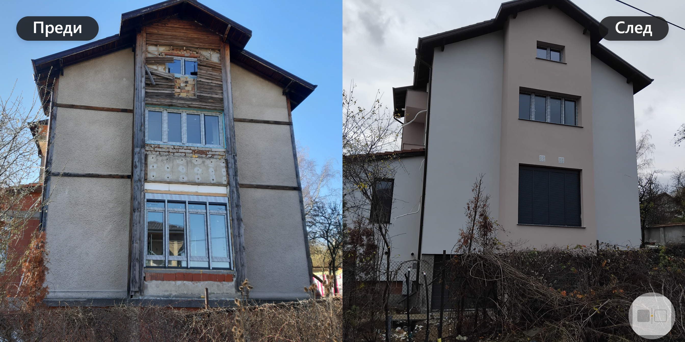
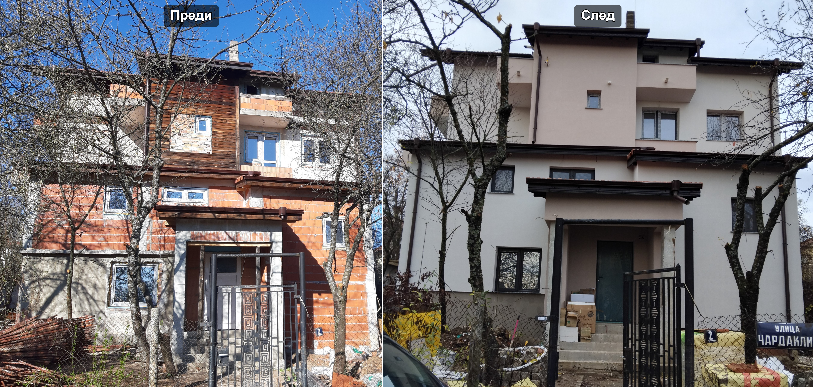
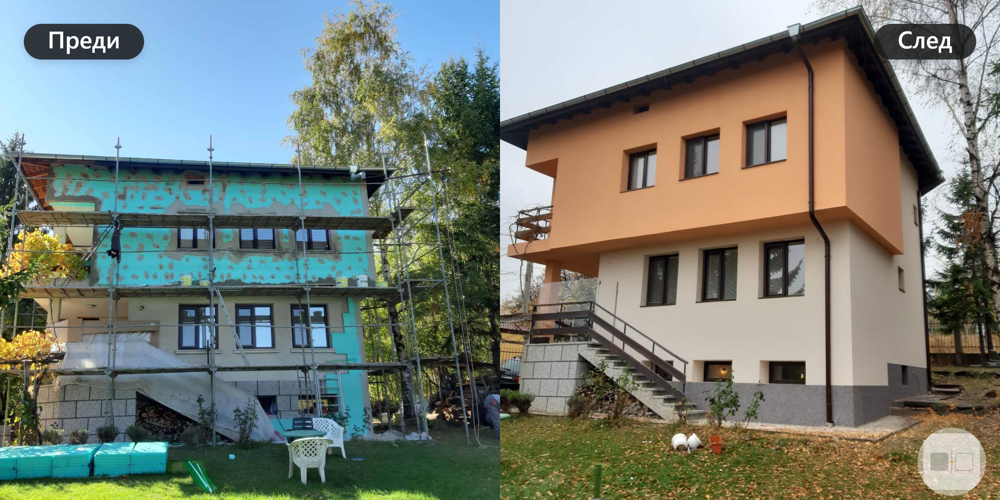
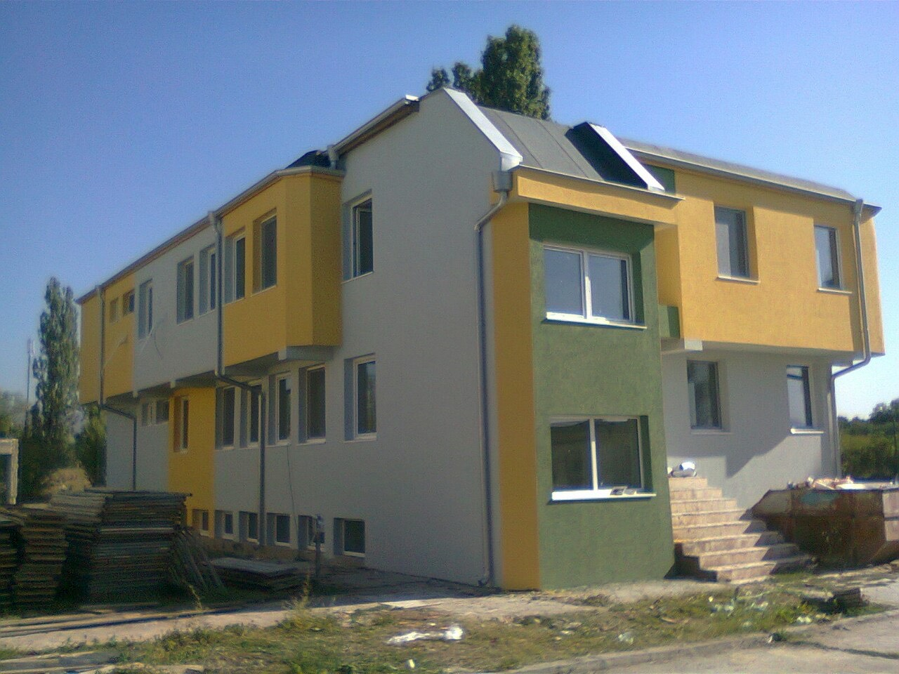

BG
EN
Професионално изпълнение на външна и вътрешна топлоизолация за апартаменти, къщи и жилищни сгради в София и околностите.
25+ години опит • 120+ завършени обекта
ЗАЯВИ БЕЗПЛАТЕН ОГЛЕД 088 999 0641Обслужваме София и околностите.
Добре изпълнената външна и вътрешна топлоизолация може да подобри топлинния комфорт на жилището и да обнови цялостния вид на фасадата.
В Термострой 07 извършваме външна и вътрешна топлоизолация от скеле като цялостен процес, съобразен с особеностите на конкретния обект.
Работим по апартаменти, къщи и други жилищни сгради в София и околностите.
Разгледайте част от изпълнените от Термострой 07 обекти за външна топлоизолация в София и околностите.
Работим по различни типове жилищни сгради — от апартаменти и къщи до по-големи фасадни обекти.




Дългогодишният опит и практиката по различни строителни и ремонтни обекти ни позволяват да подходим индивидуално към всеки проект.
Дългогодишен опит в строителните и ремонтните дейности.
Практически опит с различни типове жилищни и строителни обекти.
Работим по последователен процес от подготовката до финалното завършване.
Всеки обект се разглежда според неговото конкретно състояние и особености.
Обсъждаме необходимите дейности и етапите на работа с клиента.
Изпълняваме топлоизолация и ремонтни дейности в София и околните райони.
Всеки обект има своите особености. Затова започваме с оглед и уточняване на необходимите дейности.
Уговаряме оглед на обекта, за оценка, експертна консултация и отговаряне на вашите въпроси.
Уточняваме обхвата на работа, обясняваме технологичните стъпки и процеси. Консултираме за подходящи материали и решения за конкретния обект.
Монтаж на скеле, обезопасяване и подготовка на основата преди полагане на топлоизолацията.
Изпълняваме монтажа на топлоизолационната система според технологичните изисквания и стандарти.
Дюбелиране, армиране и шпакловане, грундиране и нанасяне на фасадна мазилка.
Завършване на необходимите довършителни работи, прибиране на скелето и почистване на обекта. Предаваме готовия обект на клиента.
Цената зависи от площта, състоянието на фасадата, необходимата подготовка, избраната система и допълнителните дейности по конкретния обект.
Затова предпочитаме първо да направим оглед и да уточним реалния обхват на работа.
Да. Изпълняваме външна и вътрешна топлоизолация за апартаменти, къщи и други жилищни обекти в София и околностите.
При външна топлоизолация на фасади, когато достъпът го изисква, работата се изпълнява от скеле. Необходимостта и конкретната организация се уточняват при огледа.
Да. Предлагаме полагане на фасадни мазилки, включително подготовка и финално фасадно покритие.
Да. Освен външна/вътрешна топлоизолация предлагаме цялостни и частични ремонти, гипсокартон, шпакловка и боядисване, хидроизолация, замазки и други строително-ремонтни дейности.
Свържете се с нас и заявите безплатен оглед. Ще обсъдим Вашия обект, необходимите дейности и възможното решение.
Планирате външна топлоизолация на апартамент или къща в София?
Свържете се с Термострой 07 за безплатен оглед и обсъдете проекта си с нас.
25+ години опит • 120+ завършени обекта
ЗАЯВИ БЕЗПЛАТЕН ОГЛЕД 088 999 0641София и околностите